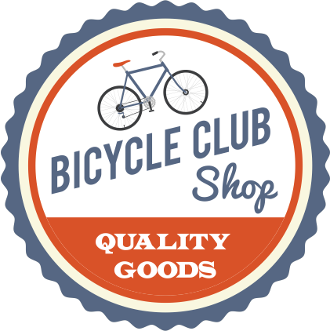

<mat-toolbar color="primary">
    <mat-toolbar-row class="grain" fxLayoutAlign="center flex-start" fxLayoutAlign.lt-md="center center">
        <div fxHide.lt-md fxFlex="0 1 0">
            
        </div>
        <div class="logo-text" fxHide.gt-sm>
            <span>Bike Club</span>
        </div>        
    </mat-toolbar-row>
    <mat-toolbar-row class="toolbar-second-row grain" fxLayout="row" fxLayoutAlign.lt-md="center center" fxLayoutAlign="flex-end center">        
        <span>
          <a mat-button mat-raised-button color="primary" routerLink="/login" routerLinkActive="mat-accent">Login</a>
          <a mat-button mat-raised-button color="primary" routerLink="/register" routerLinkActive="mat-accent">Register</a>
        </span>
    </mat-toolbar-row>
    <mat-toolbar-row class="toolbar-third-row grain">
    </mat-toolbar-row>
  </mat-toolbar>  
  <div>
    <router-outlet></router-outlet>
  </div>